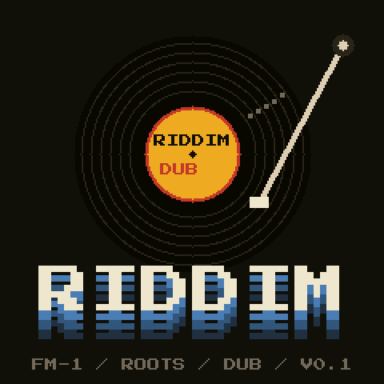
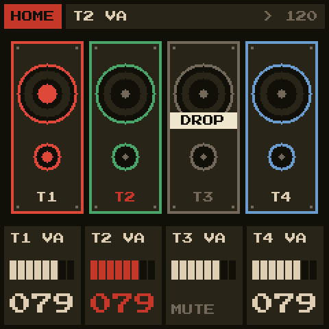

RIDDIM
A roots reggae firmware for the M-VAVE FM-1. Rocksteady, one drop, rockers, steppers, and dub played live: a whole band synthesized on the FM-1 and a dub desk to version the tune while it plays.
Um firmware de reggae roots para o M-VAVE FM-1. Rocksteady, one drop, rockers, steppers e dub tocado ao vivo: a banda inteira sintetizada no FM-1 e uma mesa de dub para versionar a música enquanto ela toca.
Version 0.1, in development. Not released, not on the FM-1 Firmware Hub, and not tested on an FM-1 yet. Today RIDDIM is a four-track groovebox with its own name, saves and screens; the reggae band and the dub desk are on the way.
Versão 0.1, em desenvolvimento. Sem release, fora do FM-1 Firmware Hub e ainda não testada num FM-1. Hoje o RIDDIM é uma groovebox de quatro trilhas com nome, saves e telas próprios; a banda de reggae e a mesa de dub estão a caminho.
On the screen
Na tela


Coming
Vem aí
Drums
Bateria
The kit is in 0.1: 20 synthesized drums, the cross-stick at its heart, the syndrum and the spring. Next, styles that play by themselves: ONE DROP, ROCKERS, STEPPERS, FLYERS, ROCKSTEADY, RUB-A-DUB.
O kit já está na 0.1: 20 tambores sintetizados, com o cross-stick no centro, o syndrum e a mola. Agora, estilos que tocam sozinhos: ONE DROP, ROCKERS, STEPPERS, FLYERS, ROCKSTEADY, RUB-A-DUB.
The band
A banda
Lines over the chord you hold: SKANK on 2 and 4, the organ's BUBBLE, a BASS that leaves room, HORNS at the end of the phrase.
Linhas sobre o acorde que você segura: SKANK no 2 e no 4, o BUBBLE do órgão, um BASS que deixa espaço, HORNS no fim da frase.
Dub
A spring reverb, a tape echo that runs away, THROW, mutes that land on the bar, and VERSION, which mixes the dub by itself.
Reverb de mola, eco de fita que dispara, THROW, mutes que entram no compasso e VERSION, que mixa o dub sozinho.
Nothing copied
Nada copiado
Every sound synthesized. No record samples, no famous riddim transcribed: the styles are written in the style.
Todo som sintetizado. Nenhum sample de disco, nenhum riddim famoso transcrito: os estilos são escritos no estilo.
The look
O visual
Install
Instalar
- Not yet. The first release comes with the results of a test on a real FM-1, then the FM-1 Firmware Hub.
- Until then, the emulator runs the same firmware in your browser.
- Ainda não. A primeira release vem com os resultados de um teste num FM-1 de verdade, e depois o FM-1 Firmware Hub.
- Até lá, o emulador roda o mesmo firmware no seu navegador.